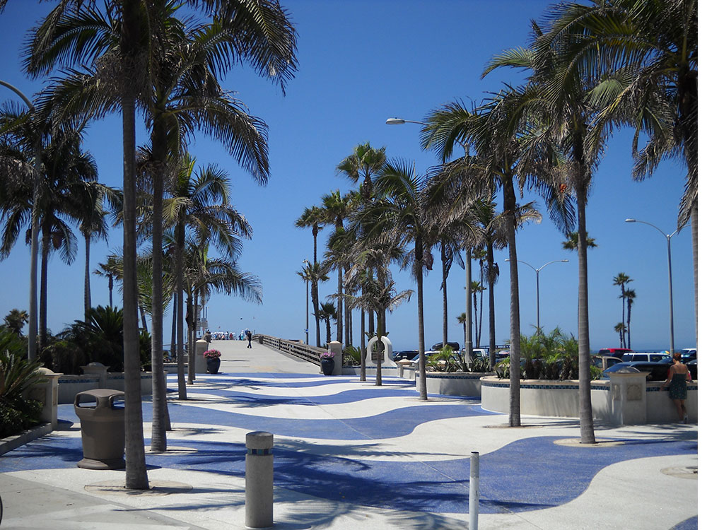
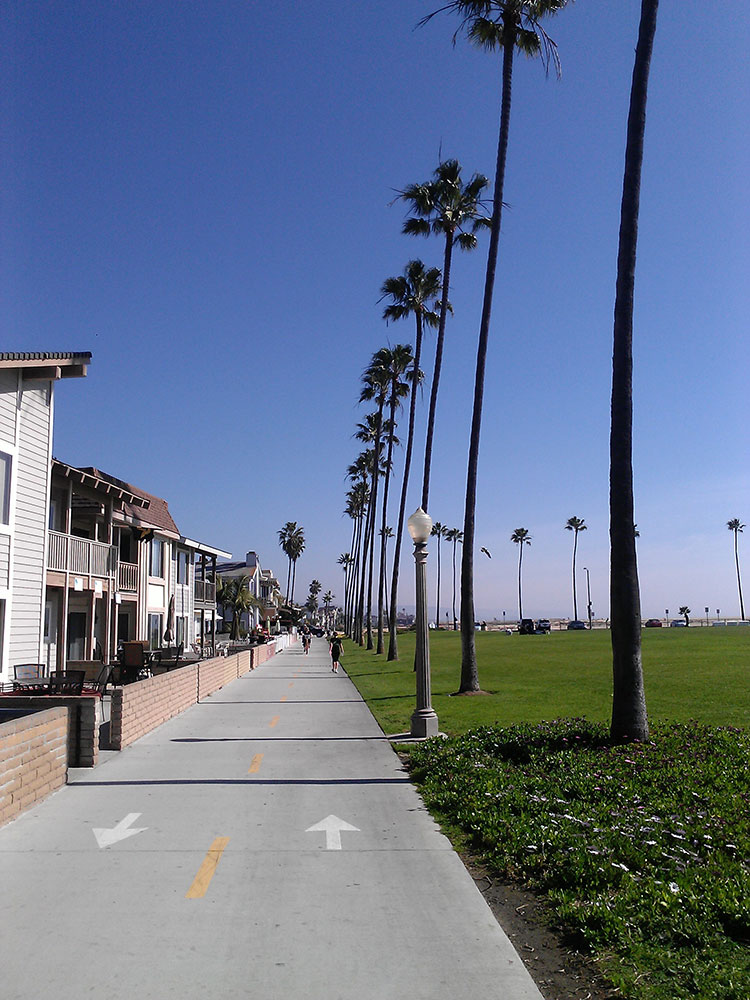
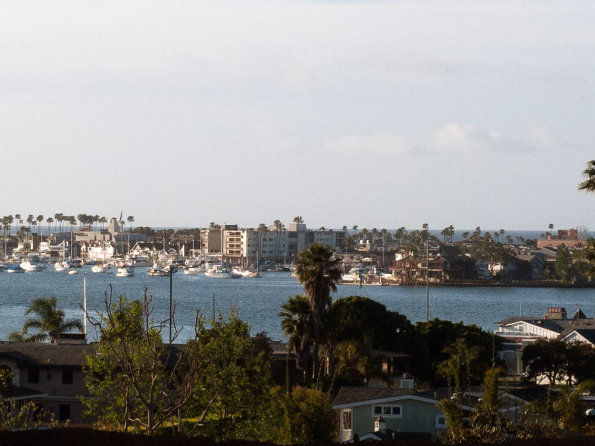
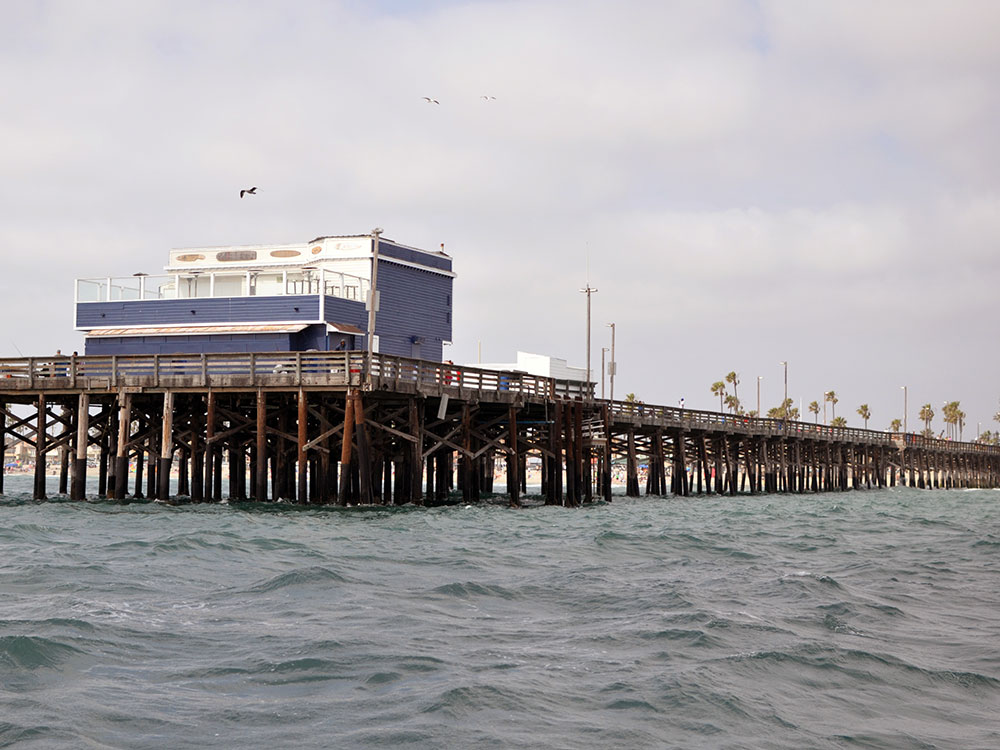
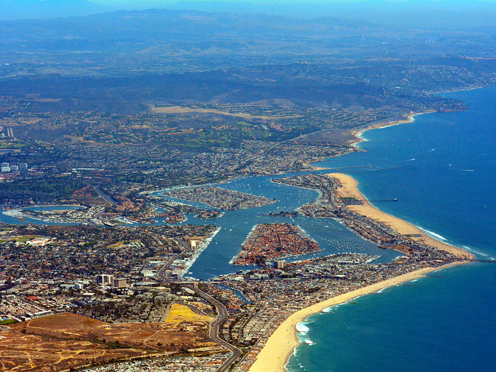

Coastal city in Orange County known for swimming and sandy beaches. Newport Harbor once supported maritime industries, but today, it is used mostly for recreation
General Information
How to Get There
From Irvine, CA (8 mi): Take Jamboree Road south toward the coast, continue into Newport Beach, and follow signs to Newport Harbor, Balboa Peninsula, Fashion Island, or the city's oceanfront beaches.
Overview
Newport Beach is an upscale Orange County coastal city known for its beaches, its huge recreational harbor and the charming Balboa Island, reached by a small car ferry. Areas include Corona del Mar, Balboa Peninsula with its pier and Fun Zone, Lido Peninsula and Newport Coast, plus the Fashion Island shopping center. Newport Harbor has boat rentals and cruises, and the Wedge at the end of the peninsula is known for big bodysurfing waves.
Things to Do
Experience Newport Beach's Iconic Coastline
Newport Beach is one of Southern California's premier coastal destinations, known for its beautiful beaches, upscale waterfront communities, luxury harbor, outdoor recreation, and year-round ocean activities. The city combines coastal charm with world-class dining, shopping, and scenic natural attractions.
Explore Newport Harbor
Newport Harbor is one of the largest recreational harbors on the West Coast and serves as the centerpiece of the city. Visitors can enjoy harbor cruises, sailing, paddleboarding, kayaking, electric boat rentals, sportfishing excursions, waterfront dining, and scenic walks along the marina.
Visit Balboa Peninsula and Balboa Pier
The Balboa Peninsula offers classic Southern California beach culture with sandy beaches, surfing, fishing, bike paths, restaurants, and family-friendly attractions. The historic Balboa Pier is a popular destination for ocean views, sightseeing, photography, and fishing.
Take the Balboa Island Ferry
A ride aboard the historic Balboa Island Ferry is one of Newport Beach's signature experiences. Visitors can explore Balboa Island's charming streets, boutique shops, waterfront homes, and famous frozen banana stands while enjoying scenic harbor views.
Discover Crystal Cove State Park
Located along the city's southern coastline, Crystal Cove State Park offers pristine beaches, tide pools, hiking trails, historic cottages, and protected coastal habitats. It is one of the most beautiful natural areas in Orange County and a favorite destination for outdoor enthusiasts.
Enjoy Whale Watching and Marine Wildlife Viewing
The waters off Newport Beach provide excellent opportunities for observing marine wildlife throughout the year. Whale-watching excursions frequently encounter gray whales, blue whales, humpback whales, dolphins, sea lions, and a variety of seabirds.
Top Trails
Upper Newport Bay Loop Trail
Length: Approximately 10.5 miles loop
Elevation Gain: Minimal
Difficulty: Easy
This scenic trail circles the Upper Newport Bay Nature Preserve, one of Southern California's most important coastal wetlands. The route offers outstanding birdwatching, wildlife viewing, and views of the estuary and surrounding natural habitats.
Back Bay View Trail
Length: Approximately 2.5 miles round trip
Elevation Gain: Minimal
Difficulty: Easy
This accessible trail provides beautiful views of Upper Newport Bay and opportunities to observe migratory birds, native plants, and coastal wetlands while enjoying a leisurely walk.
Crystal Cove Moro Canyon Trail
Length: Approximately 4.5 miles round trip
Elevation Gain: Moderate
Difficulty: Moderate
Located just south of Newport Beach, this popular trail travels through scenic canyons and ridgelines while offering panoramic views of the Pacific Ocean and Crystal Cove's protected wilderness areas.
Castaways Park Trail
Length: Approximately 1.5 miles round trip
Elevation Gain: Minimal
Difficulty: Easy
This bluff-top trail features sweeping views of Newport Harbor, the Back Bay, luxury waterfront neighborhoods, and the Pacific Ocean. It is particularly popular for sunset walks and photography.
Points of interest
- Newport Center and Fashion Island
- Orange County Museum of Art
- Hoag Hospital
- Newport Back Bay or Upper Newport Bay
- Newport Pier
- Balboa Pier
- Balboa Fun Zone
- Balboa Island Ferry
- Balboa Island
- Lido Isle
- Lido Marina Village
- Inspiration Point
- Crystal Cove Shake Shack
- Sherman Library & Gardens
- Newport Sports Museum
- Pacific Coast Highway
- Orange County Council BSA Sea Base
- The Crab Cooker
- Corona del Mar State Beach
- Crystal Cove State Park
- The Wedge (surfing)
- Lovell Beach House
- Wooden Boat Festival
- Balboa Pavilion on Main Street
- Balboa Bay Resort
- Lovell Beach House
- Newport Beach Boat Show
- Orange County Museum of Art
Beaches and surfing
Beachgoers have flocked to Newport Beach since the Pacific Electric Railway started bringing them in 1905. Attractions include the city beaches from the Santa Ana River to the tip of the Balboa Peninsula, Corona del Mar State Beach, and the beaches at Crystal Cove State Park. Newport Beach is known for good surfing, especially between Newport Pier and the Santa Ana River. At the tip of the Balboa Peninsula, The Wedge offers world-class bodyboarding and bodysurfing. Newport Pier and Balboa Pier draw fishermen and sightseers. A boardwalk runs 2.9 miles (4.7 km) from 36th Street in West Newport, past Newport Pier and Balboa Pier, to between E and F Streets on the Balboa Peninsula for both pedestrians and bikers.
Harbor and boating
Newport Harbor is the largest recreational boat harbor on the U.S. west coast, and a popular destination for all boating activities, including sailing, fishing, rowing, kayaking, and paddleboarding.
Balboa
On the Balboa Peninsula, the historic Balboa Pavilion and Balboa Island Ferry are the city's most famous landmarks. Adjacent to the Pavilion, the 500 passenger Catalina Flyer provides daily transportation to and from Avalon, located on Santa Catalina Island. The Balboa Fun Zone is also home to the Newport Harbor Nautical Museum.
Balboa Island village draws many visitors. A waterfront path around the island attracts walkers and joggers, and provides easy access from the ferry to the shops and restaurants.
Outdoors and nature
Upper Newport Bay, or the Back Bay, is ringed by Back Bay Drive and a network of trails and paths that attract bicyclists, rollerbladers, joggers, and walkers. Bird watchers and nature lovers are drawn to the Upper Newport Bay Ecological Reserve and Peter and Mary Muth Interpretive Center; and Crystal Cove State Park features tide pools at its beach, with backcountry hiking and mountain biking trails. Camping is available at Crystal Cove State Park, and at the Newport Dunes Waterfront Resort and Marina. Whale watching is also popular in the area, with both scheduled and charter boats leaving directly from Newport Harbor. Whales and dolphins can often be seen from the Balboa and Newport Piers, as well as the shoreline during migration season.
Fishing is also extremely popular in Newport Bay, off the coast of Newport, and along the Newport Bay Jetty. Within the bay, there are multiple locations to purchase bait for dockside or spear fishing convenience. There are about 80 fishable species located in Newport Bay. A few of the most commonly fished species are include the Gray Smoothhound Shark, Leopard Shark, Round Stingray, Shovelnose Guitarfish, Pacific Staghorn Sculpin, Silvery Mullet, Top-smelt, California Halibut, Spotted Sand Bass, Yellowfin Croaker, Bat Ray, Thornback Ray, Diamond Turbot, Shiner Surfperch, Corbina, Opaleye, Pile Surfperch, and Red Shiner. Commercial fishing is also prominent in offshore Newport Beach and Newport Bay. Lobsters are commonly fished in the reefs. The bright orange Garibaldi fish found offshore, however, is a protected species.
On dark nights, intense occurrences of bioluminescence can be observed when waves splash into the shore, or when marine animals leave glowing traces in their wake.
Bicycling
The boardwalk is a natural draw for bicyclists. Beach cruiser bikes can be rented at several places on the Balboa Peninsula. Bicyclists are also drawn to Back Bay Drive and the bike paths around Upper Newport Bay; the hilly roads winding through Newport Coast and the San Joaquin Hills; and the mountain biking trails in the San Joaquin Hills and Crystal Cove State Park. Pacific Coast Highway provides access to these areas and is a major bicycle route through the region, despite being shared with heavy motor vehicle traffic.
Culture and nightlife
Fashion Island at Newport Center is a regional shopping and entertainment destination. Also at Newport Center, the Orange County Museum of Art exhibits modern and contemporary art, with emphasis on the work of Californian artists.
In popular culture
The TV show The O.C. was based on the fictional lives of people living in Newport Beach.
The TV series Arrested Development is set in Orange County and often features scenes at Newport Beach.
The TV series The Real Housewives of Orange County featured scenes of Newport Harbor.
Sources: Visit Newport Beach official tourism information, including details on Newport Harbor, Balboa Peninsula, Balboa Island, whale watching, beaches, outdoor recreation, and visitor attractions.
https://www.visitnewportbeach.com/https://www.visitnewportbeach.com/
Additional information verified through City of Newport Beach resources, Newport Bay Conservancy information, and Crystal Cove State Park materials covering coastal wetlands, hiking trails, wildlife viewing, harbor activities, and recreational opportunities throughout Newport Beach.
https://www.newportbeachca.gov/https://www.newportbeachca.gov/
This article uses material from the Wikipedia article "Newport Beach, California", which is released under the Creative Commons Attribution-Share-Alike License 3.0








